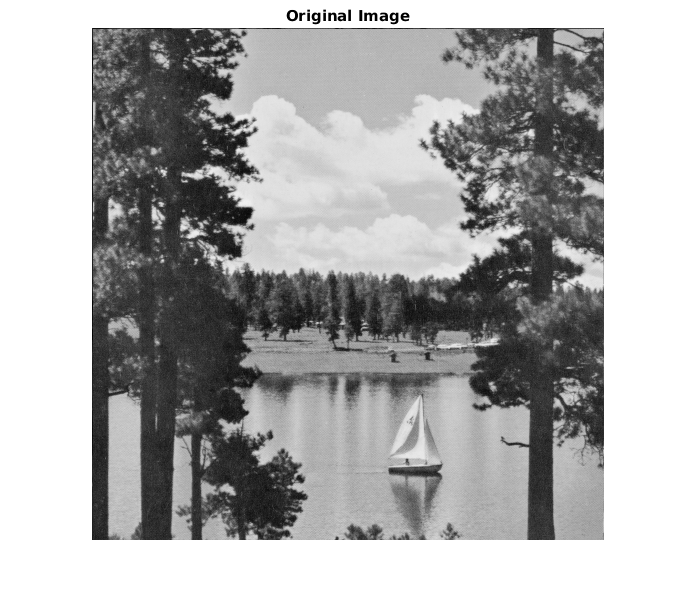
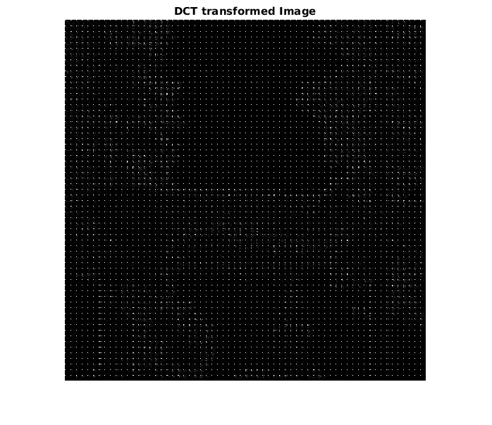
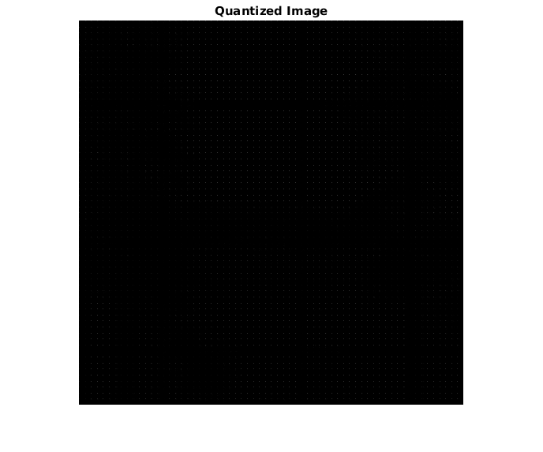

Contents
Applying DCT transform and quantization to all 8x8 sub-windows
function [] = q3() im = 'LAKE.TIF'; c = 2; image = imread(im); [x, y] = size(image); DCTFinal = ones(x, y); QDCTFinal = ones(x, y); % Classical quantization matrix taken from the internet qMat = [16 11 10 16 24 40 51 61; 12 12 14 19 26 58 60 55; 14 13 16 24 40 57 69 56; 14 17 22 29 51 87 80 62; 18 22 37 56 68 109 103 77; 24 35 55 64 81 104 113 92; 49 64 78 87 103 121 120 101; 72 92 95 98 112 100 103 99]; DCT = create_mat_dct(); for i = 1:8:x-7 for j = 1:8:y-7 subPart = image(i:i+7, j:j+7); transformedPartDCT = myDCT(subPart, DCT); transformedPartQDCT = myDCT_quantization(transformedPartDCT, qMat, c); DCTFinal(i:i+7, j:j+7) = transformedPartDCT; QDCTFinal(i:i+7, j:j+7) = transformedPartQDCT; end end % Displaying the original image, image after DCT and image after quantised % DCT. Currently commented as code is reused by the rest of the questions figure, imshow(image); title('Original Image') figure, imshow(uint8(DCTFinal)); title('DCT transformed Image') figure, imshow(uint8(QDCTFinal)); title('Quantized Image') end  
Comments
In quantized DCT of the image, we see dots in the areas where the image is uniform.